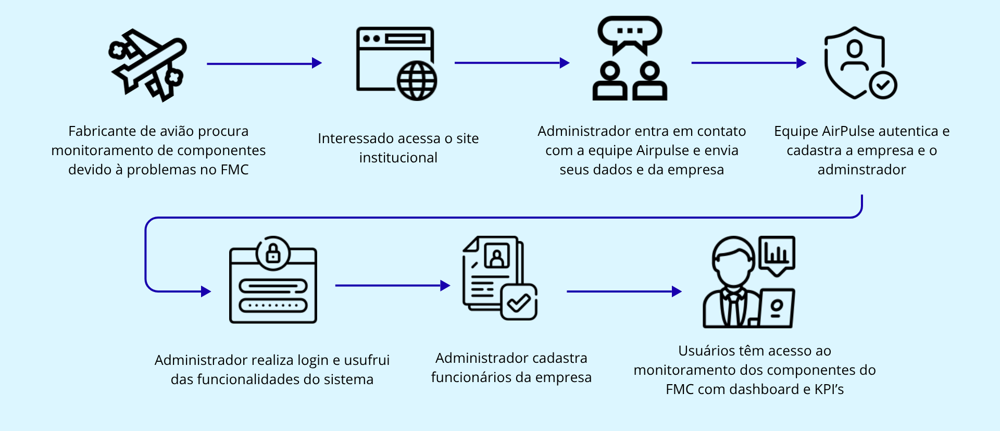
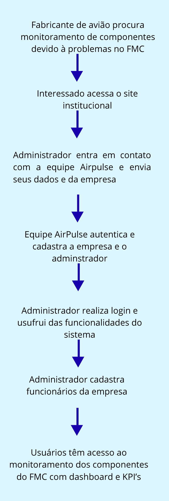
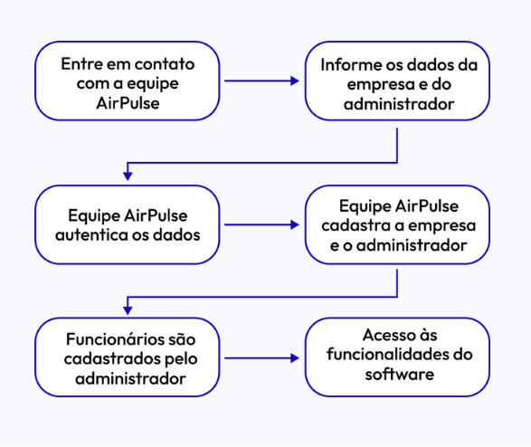

Visão completa da sua operação em tempo real.
Processos otimizados para resultados melhores.
Conformidade e proteção em cada etapa.
Time especializado pronto para te ajudar.
A AirPulse coleta, processa e apresenta métricas dos computadores de gerenciamento de voo em tempo real.
Acompanhe a utilização do processador, identifique picos e receba alertas antes que a sobrecarga afete o desempenho.
Monitore o consumo de memória, tendências de uso e disponibilidade. Previna falhas por falta de memória.
Controle o espaço em disco, taxa de crescimento e integridade. Saiba com antecedência quando agir.
Receba notificações automáticas quando qualquer métrica ultrapassar os limites configurados.
Visualize todos os computadores embarcados em uma única tela. Filtre, compare e decida com agilidade.
O sistema garante a análise contínua dos dados dos componentes proporcionando a prevenção de erro..


Uma plataforma institucional que transforma dados em prevenção, reduzindo incidentes e aumentando a eficiência operacional.
Entregar monitoramento proativo para que equipes possam antecipar falhas, reduzir downtime e focar em crescimento.
Ser a plataforma de confiança para operações digitais - onde dados se tornam ações preventivas, não apenas relatórios.
Confiança, clareza e prevenção - tudo feito com engenharia rigorosa e atendimento próximo.
A AirPulse nasceu
de uma necessidade real no mercado aeroespacial: transformar a gestão do tempo de resposta
e mitigar o impacto financeiro de falhas nos computadores de gerenciamento de voo (FMC).
O que começou como um projeto universitário focado na análise preditiva e monitoramento
de hardware evoluiu para uma solução de arquitetura robusta e em tempo real.
Nossa missão é mudar o paradigma da manutenção aeronáutica, migrando o foco de incidentes
corretivos para a prevenção inteligente, direcionando nossa tecnologia especificamente
para as empresas fabricantes desses computadores bordo.
Hoje, ajudamos nossos parceiros a monitorar a infraestrutura de maneira altamente proativa e
customizável, identificando desvios e riscos precocemente, antes mesmo que afetem as
operações das companhias aéreas.
O que torna a AirPulse diferente no mercado de monitoramento.
Identificamos anomalias antes que se tornem incidentes, reduzindo downtime e custos de recuperação.
Implementações rigorosas em segurança da informação e SLAs claros para operações críticas.
Modelos de economia transparentes para que você veja o impacto financeiro real da prevenção.

Email para contato:
Telefone para contato: